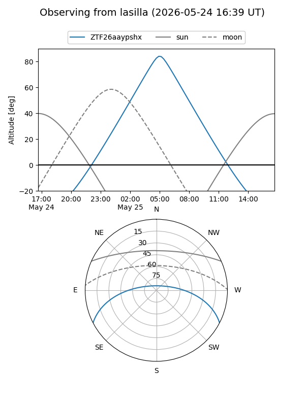
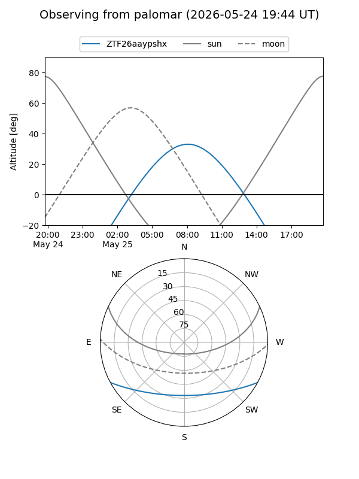

ZTF26aaypshx
Target ZTF26aaypshx at 2026-05-25 08:53
Aliases and brokers:
lsst-FINK: link
lsst-Lasair: link
lsst-ALeRCE: link
ztf-FINK: link
ztf-Lasair: link
ztf-ALeRCE: link
alt names
ZTF26aaypshx (ztf,fink_ztf)
Coordinates:
equatorial (ra, dec) = 246.7239,-23.48619
equatorial (HMS+DMS) = 16:26:53.72,-23:29:10.27
galactic (l, b) = (353.8628,+17.43502)
Flags:
Photometry:
last ztfg=19.63
1 ztfg detections
Lightcurve
Visibility


Additional plots